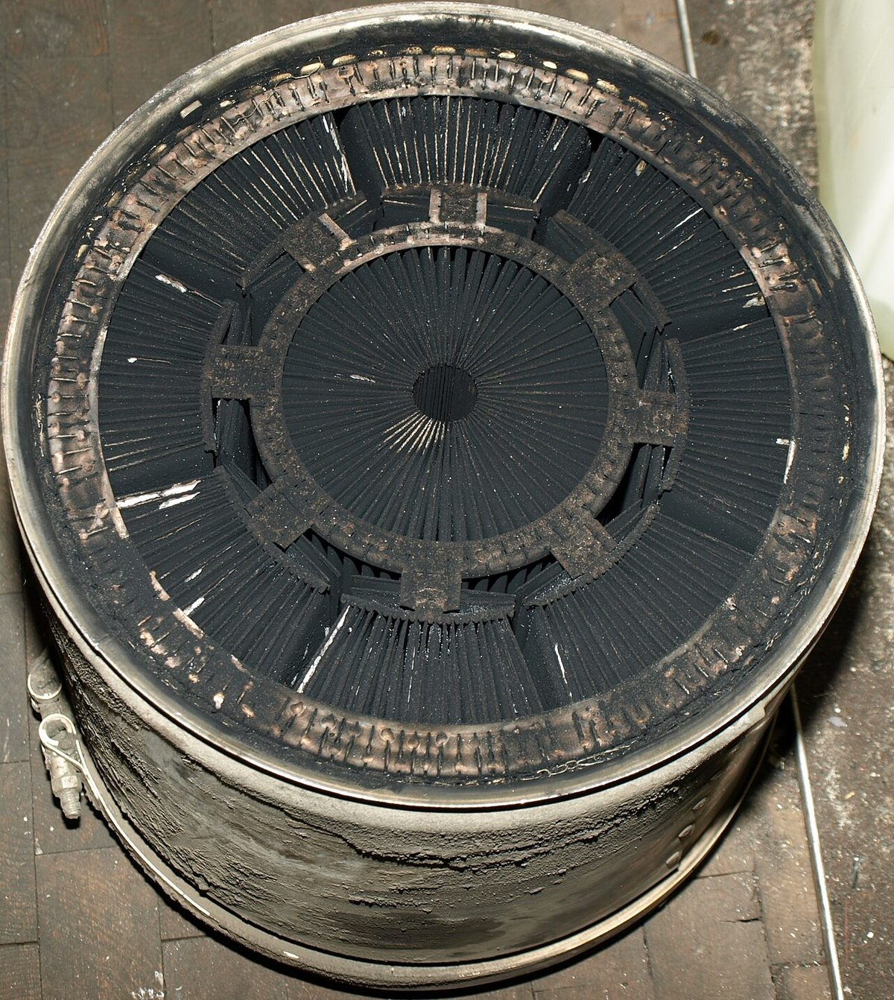
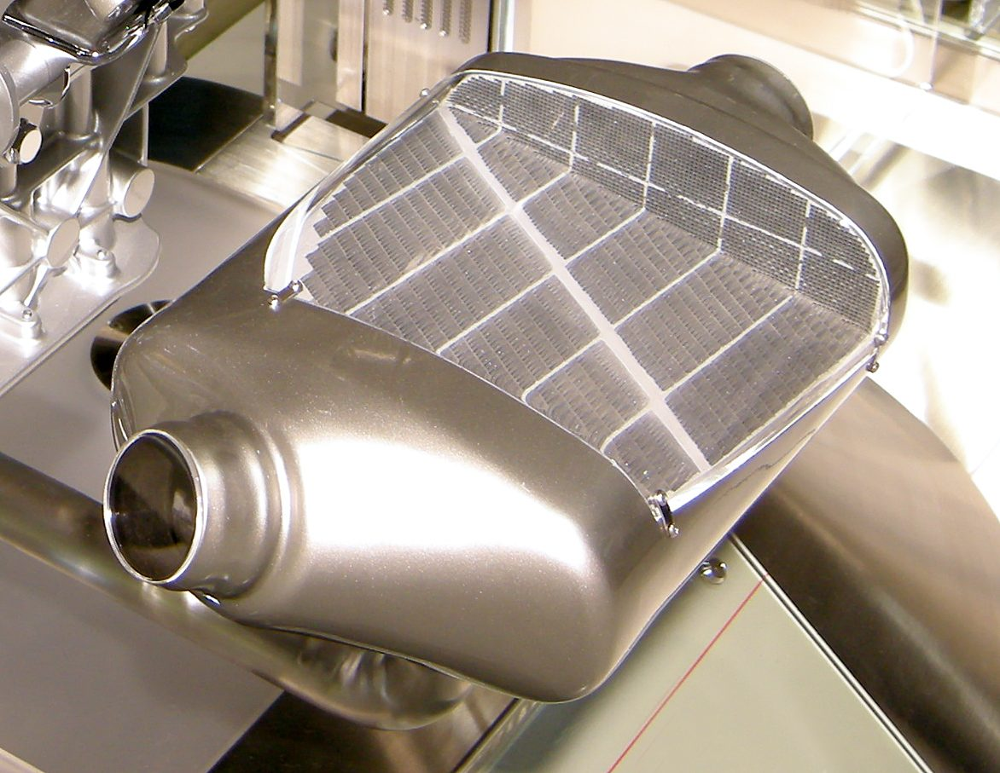

Poradňa autoservisu autoZ
Svieti kontrolka DPF
Oranžová kontrolka DPF (obdĺžnik s bodkami, pri niektorých autách nápis) upozorňuje, že filter pevných častíc vo výfuku je zanesený sadzami a nedarí sa ho vyčistiť bežnou jazdou.




Môžem jazdiť?
Nepokračujte v bežnej jazde. Dôjdite opatrne len do servisu alebo auto nechajte odtiahnuť. Pri silne zanesenom filtri už jazda na vyčistenie nestačí a ďalším jazdením môže vzniknúť drahšia porucha.
Jazdiť môžete. Postupujte podľa návodu k vozidlu – zvyčajne treba dlhšiu plynulú jazdu mimo mesta, aby prebehla regenerácia. Ak kontrolka nezhasne, dajte auto skontrolovať.
Čo je DPF a čo kontrolka znamená
Filter pevných častíc (DPF, pri niektorých značkách FAP) zachytáva sadze z výfukových plynov naftového motora. Postupne sa zapĺňa a musí sa čistiť – tomu sa hovorí regenerácia. Sadze sa pri nej spália pri vysokej teplote výfukových plynov.
Riadiaca jednotka sleduje zanesenie filtra, najčastejšie podľa rozdielu tlakov pred filtrom a za ním. Keď je filter plný a regenerácia sa nedarí, rozsvieti sa kontrolka DPF.
Prečo sa DPF zanáša pri krátkych jazdách
Regenerácia potrebuje dostatočne zahriaty výfuk a dlhšiu plynulú jazdu. Pri krátkych jazdách po meste sa výfuk nestihne zahriať alebo sa regenerácia preruší vypnutím motora. Sadze pribúdajú a filter sa zanáša. Preto kontrolka DPF často svieti autám, ktoré jazdia hlavne na krátke vzdialenosti.
Opakovane prerušené regenerácie môžu pri niektorých motoroch zvyšovať hladinu oleja, pretože sa do neho dostáva nafta. Ak hladina oleja rastie nad maximum, dajte auto skontrolovať.
Najčastejšie príčiny
| Príčina | Čo si môžete všimnúť | Poznámka |
|---|---|---|
| Časté krátke jazdy, prerušené regenerácie | kontrolka sa rozsvieti po období jazdenia po meste | často pomôže dlhšia jazda podľa návodu |
| Chybný snímač diferenčného tlaku alebo jeho hadičky | kontrolka svieti aj po dlhej jazde, filter môže byť v poriadku | overuje sa diagnostikou |
| Chyby motora – ventil EGR, vstrekovače, turbo | viac sadzí, dym, slabší výkon, často aj kontrolka motora | treba opraviť príčinu, inak sa filter zanesie znova |
| Nesprávny motorový olej | olej nezodpovedá predpisu výrobcu | pri autách s DPF sa používa olej podľa špecifikácie |
| Málo aditíva (pri autách, ktoré ho používajú) | hlásenie o aditíve alebo DPF | platí len pre niektoré značky |
| Filter je na konci životnosti (popol) | regenerácia už nepomáha | čistenie alebo výmena filtra |
Prehľad je orientačný, postup sa líši podľa výrobcu a motora.
Čo urobiť, keď svieti kontrolka DPF
- Pozrite v návode k vozidlu, čo výrobca pri tejto kontrolke odporúča.
- Ak auto ide normálne, zvyčajne pomôže dlhšia plynulá jazda mimo mesta s vyššími otáčkami, počas ktorej sa motor nevypína.
- Ak kontrolka po takejto jazde nezhasne, ďalej to neskúšajte opakovane – dajte auto skontrolovať.
- Ak svieti aj kontrolka motora alebo je auto v núdzovom režime, nejazdite ďalej ako do servisu.
- V servise sa prečíta chyba, zistí sa zanesenie filtra a príčina. Podľa stavu sa robí servisná regenerácia diagnostikou, čistenie alebo výmena filtra.
Vybratie alebo vymazanie DPF nie je riešenie
Filter pevných častíc je súčasťou emisného systému auta. Jeho odstránenie je v rozpore s predpismi a auto s ním nemusí prejsť emisnou kontrolou. Rozumné je zistiť, prečo sa filter zanáša, a opraviť príčinu.
Ak naraz svieti aj kontrolka motora alebo bliká kontrolka žhavenia, chyba môže byť v motore. Všetky kontrolky podľa farby nájdete na hlavnej stránke svietikontrolka.sk.
Časté otázky
Môžem jazdiť, keď svieti kontrolka DPF?
Ak svieti len kontrolka DPF a auto ide normálne, áno – zvyčajne pomôže dlhšia plynulá jazda podľa návodu. Ak svieti aj kontrolka motora alebo je auto v núdzovom režime, dôjdite opatrne len do servisu alebo auto nechajte odtiahnuť.
Čo je regenerácia DPF?
Je to čistenie filtra pevných častíc, pri ktorom sa zachytené sadze spália pri vysokej teplote výfukových plynov. Prebieha automaticky počas jazdy, ak to podmienky dovolia. V servise sa dá spustiť aj diagnostikou.
Prečo sa mi DPF zanáša, keď jazdím málo?
Pri krátkych jazdách sa výfuk nestihne zahriať a regenerácia sa nedokončí. Sadze sa hromadia a filter sa zanáša.
Pomôže aditívum do nafty?
Niektoré prípravky môžu pomôcť pri regenerácii, ale neopravia chybný snímač ani poruchu motora, ktorá tvorí veľa sadzí. Ak kontrolka svieti opakovane, treba zistiť príčinu.
Kde v Trenčíne skontrolujú DPF?
V autoservise autoZ na ulici gen. M. R. Štefánika 6670/19 v Trenčíne, pri Kauflande. Objednať sa môžete na 0910 606 999 alebo na autoz.sk/rezervacia.
Potrebujete poradiť?
Diagnostiku filtra pevných častíc a motora robíme v autoservise autoZ v Trenčíne. Zavolajte alebo sa objednajte online. Fotku palubnej dosky môžete poslať aj na WhatsApp.
autoZ – autoservis Zelman · gen. M. R. Štefánika 6670/19, 911 01 Trenčín (pri Kauflande) · 0910 606 999 · Po–Pi 8:00–16:30 · www.autoz.sk · Diagnostika auta Trenčín · Oprava motora Trenčín